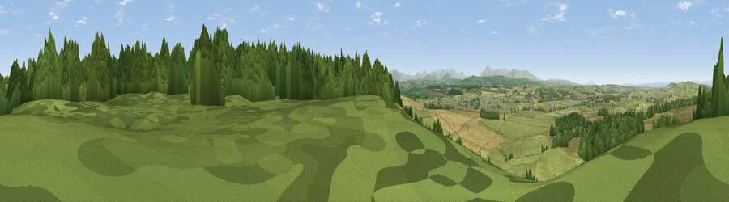

Viewpoint near Plumpton
#6754 in England · top 32% of its area beats it · near PlumptonThe view, rendered

A 360° render of this exact spot computed from the terrain model, tree cover and land cover — summer colours, afternoon light, calibrated against photographs of famous viewpoints. Real trees, hedges and buildings will differ in detail.
The panorama
Grey silhouette: terrain skyline in each direction (720 bearings, Earth curvature and refraction included). Dashed green: skyline with trees (+15 m) and buildings (+8 m) as obstacles. Blue strip: how far the ground is visible on each bearing.
Where the view opens
Wedge length = distance to the farthest visible ground on that bearing (vegetation-aware). Rings at 10, 25 and 50 km.
What fills the view
55% grassland · 37% woodland · 7% cropland ·
Angular shares of the visible panorama (visual magnitude), not map area. Landscape diversity 0.40 (0–1 Shannon).
Key numbers
More beautiful places nearby
The staircase of upgrades: each row has a higher view potential than everything closer. Driving times are estimates from straight-line distance, calibrated against real road routing — check an actual route before setting out.
| Place | Direction | Drive | Score |
|---|---|---|---|
| Viewpoint near Plumpton | N · 1 km | ~3 min | 68.9 |
| Viewpoint near Plumpton | S · 3 km | ~8 min | 78.9 |
| Barrock Fell | NNW · 10 km | ~19 min | 81.1 |
| Viewpoint near Watermillock | SSW · 18 km | ~32 min | 82.6 |
| Viewpoint near Watermillock | SSW · 19 km | ~32 min | 83.5 |
| Skiddaw South Top | WSW · 27 km | ~43 min | 85.8 |
| Viewpoint near Applethwaite | WSW · 28 km | ~45 min | 86.7 |
| Long Side | WSW · 28 km | ~45 min | 89.5 |
54.74023, -2.75600 · source: screening · position refined by local search. Computed location — check access rights before visiting.